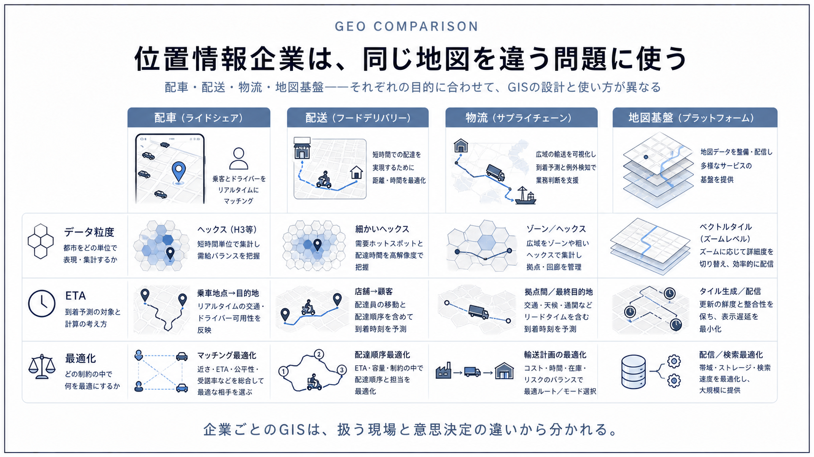
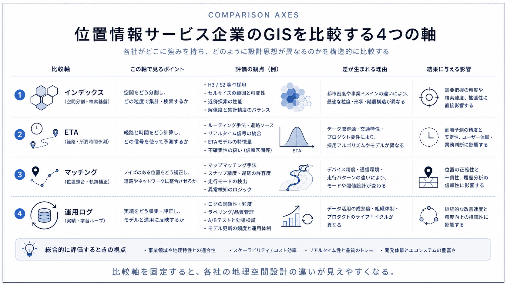
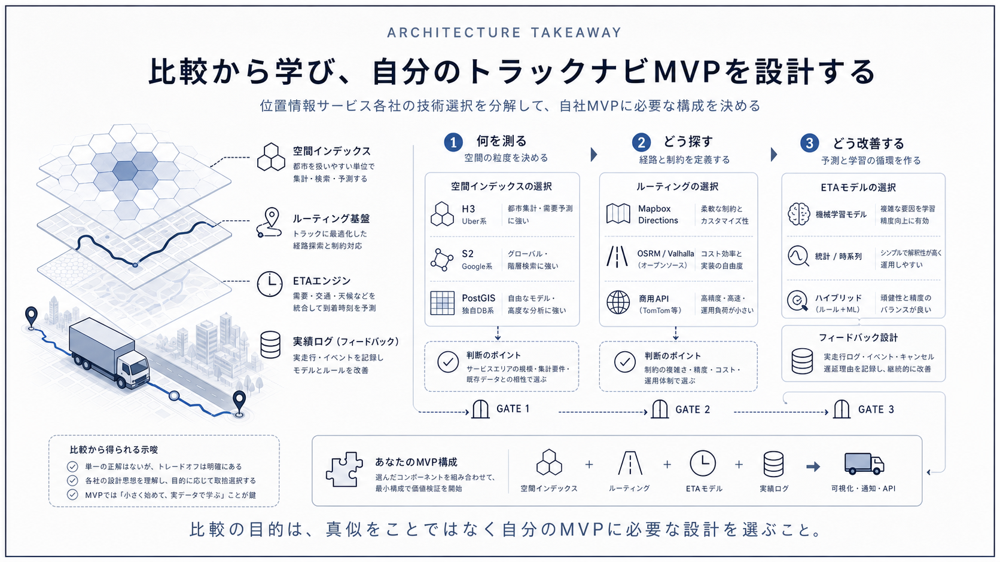

Question Note / Geospatial Architecture
位置情報サービス企業の独自GIS・地理空間技術比較


この記事群の読み方
Issue #14 の指定に沿って、Uber、Google、Mapbox、DoorDash、Lyft、Grab、project44 を1企業1ページで整理しました。ここでは全体比較だけを置き、各社ページへ移動できるようにします。
企業別ページ
- Uber: H3を中心に見る配車・ETA・独自GISの分解
- Google: S2 GeometryとMaps/BigQuery GISの役割
- Mapbox: Vector Tiles・Navigation・Map Matchingの分担
- DoorDash: 配送ETA・Dispatch・物流最適化の地理空間設計
- Lyft: ライドシェアのマッチング・ETA・需要予測
- Grab: 東南アジアの地図・ETA・Dispatch基盤
- project44: 物流可視化・GPS照合・ETAの地理空間基盤
比較表
| 企業 | 主な地理空間技術 | 独自GIS的な部分 | PostGISとの違い | トラックナビへの応用 |
|---|---|---|---|---|
| Uber | H3 | 独自GIS的な部分は、セル単位で需要供給を見ながら、リアルタイム位置キャッシュとETAモデルを接続し、マーケットプレイス判断へ渡す層 | PostGISはSQLで形状、距離、包含、交差を扱うDB拡張 | トラックナビMVPではPostGISとMapboxで十分 |
| S2 / BigQuery GIS | 独自GIS的な部分は、S2のような球面セル表現、膨大な地図・場所データ、検索・ルーティング・分析基盤をプロダクト横断で扱う点 | PostGISはアプリDB内で形状演算をする | トラックナビでは、広域エリア判定や地理セルの考え方を学ぶ価値がある | |
| Mapbox | Vector Tiles / Navigation | 独自GIS的な部分は、地図データ配信、レンダリング、ルーティング、マップマッチング、SDK体験を統合している点 | PostGISは自社データの検索・判定・保存に向く | トラックナビMVPではMapboxを地図表示・ルート案内に使い、自社側はPostGISでユーザー拠点、休憩所、規制、案件を管理する |
| DoorDash | ETA / matching / dispatch | 独自GIS的な部分は、店舗、配達員、注文、顧客をリアルタイムに照合し、ETAとDispatch判断へつなぐ層 | PostGISは距離・包含・近傍検索に強いが、配送ETAや割当品質はDB関数だけでは決まらない | トラックナビでは、配送ETAそのものより「地点、車両、予定、作業状態を分けて保存し、予測は後から足す」考え方が参考になる |
| Lyft | ETA / matching / dispatch | 独自GIS的な部分は、リアルタイム位置、ETA、マッチング、需要予測をマーケットプレイス判断に統合する層 | PostGISは保管済みジオメトリへの問い合わせに向く | トラックナビMVPでは、リアルタイムマッチングより、施設候補を正しく出すことが優先 |
| Grab | ETA / matching / dispatch | 独自GIS的な部分は、自社運用で得られる位置・POI・道路・ドライバー挙動を地図やETAに戻すループ | PostGISは自社DBの空間演算に使えるが、Grab型では地域の地図品質を補うデータ収集、道路補正、ETA、Dispatchまで必要になる | トラックナビでは、日本の大型車制約、駐車場入口、休憩所の実運用データを集め、地図APIだけでは足りない属性を自社データとして育てる考え方が参考になる |
| project44 | GPS visibility / ETA | 独自GIS的な部分は、複数ソースのGPSやステータスをshipment単位へ結びつけ、ETAと例外通知を出す統合レイヤー | PostGISは地点・ジオフェンス・到着判定に使えるが、project44型ではデータ接続、ID照合、イベント正規化、ETA、可視化が中心になる | トラックナビでは、車両位置そのものより、案件、目的地、停車、到着、遅延理由を同じIDで追える設計が参考になる |
トラックナビMVPで採用すべき構成
結論は PostgreSQL + PostGIS + Mapbox で十分です。PostGISで自社データの地点、施設、規制、ジオフェンスを扱い、Mapboxで表示と経路案内を行います。リアルタイム位置検索、大量車両、広域集計が必要になった段階で、H3 / S2 / Redis GEO / 独自インデックスを追加します。
